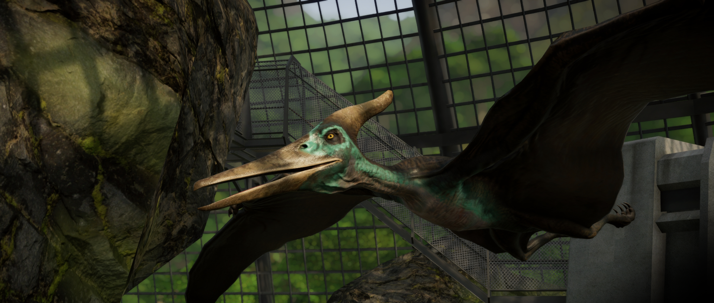

O Pteranodonte é um dos maiores pterossauros que já existiram, com uma envergadura de até 7 m, e é facilmente reconhecível graças à crista no topo de seu crânio que ele usa para se exibir. Embora grande parte de sua dieta consista em peixes, ele não tem dentes e mastiga sua presa com o bico. De fato, seu nome se traduz como “asa desdentada”.